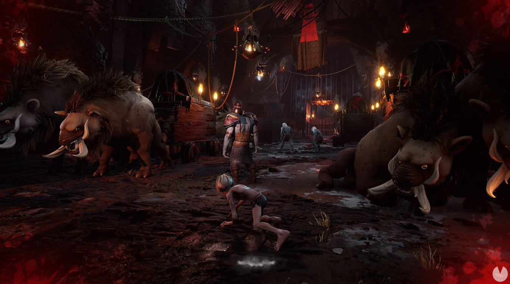

The Lord of the Rings: Gollum se muestra en un pequeño tráiler... mi tesoro
Nacon y Daedalic Entertainment han publicado un pequeño tráiler de su juego de acción y aventuras The Lord of the Rings: Gollum que llegará a España en 2022.
Gracias a esta nueva obra de Daedalic publicada por Nacon podremos descubrir algunos de los momentos nunca contados de la historia de uno de los antagonistas más carismáticos de la fantasía épica, con un viaje que nos llevará desde las profundidades de Barad-dûr al Bosque Negro entre otros parajes aterradores y salvajes de la Tierra Media:
The Lord of the Rings: Gollum nos permitirá controlar con total libertad a Gollum utilizando como queramos su sigilo, agilidad y astucia para sortear peligros o emboscar a nuestros enemigos además de que las decisiones que tomemos y la forma en la que nos enfrentemos a los peligros tendrán un impacto directo en la personalidad de Gollum siempre debatiéndose entre sus dos carras, Gollum y Sméagol y deseando hacerse de nuevo con mi tesoro... es mío, solo mío
The Lord of the Rings: Gollum llegará durante el 2022 a PC, PS4, PS5, Xbox One, Xbox Series X/S y Nintendo Switch.